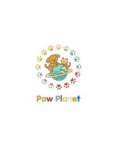

Trade Mark Journal No.2025/050 12 December 2025
UK00004305325 4 December 2025 (18,20,21,28,31)

- Class 18
- Collars for pets; Clothing for pets; Pets (Clothing for -); Garments for pets; Raincoats for pet dogs; Clothing for domestic pets; Leashes for animals; Pet clothing; Bags for carrying pets; Dog leashes; Electronic pet collars; Animal leashes; Collars for cats; Clothing for dogs.
- Class 20
- Kennels for household pets; Beds for pets; Playhouses for pets; Beds for household pets; Grooming tables for pets; Portable beds for pets; Pet houses; Pet crates; Pet furniture; Non-metal safety gates for babies, children, and pets; Pet grooming tables; Nesting boxes for household pets; Household pets (Nesting boxes for -); Cushions (Pet -); Pet cushions; Nesting boxes for pets; Dog kennels; Inflatable pet beds; Dog houses [kennels]; Barrels (Non-metallic -) for the identification of pet animals.
- Class 21
- Cages for pets; Cages for household pets; Pets (Cages for household -); Toothbrushes for pets; Brushes for pets; Trays (Litter -) for pets; Litter trays for pets; Litter trays for pet animals; Food containers for pet animals; Litter boxes for pets; Cages for carrying pets; Litter scoops for use with pet animals; Feeding vessels for pets; Brushes for grooming pet animals; Wire cages for household pets; De-shedding combs for pets; Deshedding brushes for pets; Deshedding combs for pets; Automatic litter boxes for pets; Pet feeding dishes; Pets (Litter boxes [trays] for -); Litter boxes [trays] for pets; Pet feeding bowls; Pet lick mats.
- Class 28
- Toys for pets; Toys for pet animals; Toys for domestic pets; Pet toys; Toys and playthings for pets; Toys and playthings for pet animals; Whack-a-mole toys for pets; Ball launchers for pets; Sports equipment for pets; Toys, games and playthings for pet animals; Toys for dogs; Toys for translating feelings of pets; Toys for cats; Toys for animals; Dog toys.
- Class 31
- Pet animals; Beverages for pets; Pet food for dogs; Foodstuffs for pet animals; Pet birds; Pet foods; Pet beverages; Pet foodstuffs; Pet food for birds; Pet food; Food (Pet -); Dogs; Cats; Animal litter for cats; Pets (Aromatic sand for -) [litter]; Aromatic sand for pets [litter]; Aromatic sand [litter] for pets; Food for cats; Edible silvervine powder for pet cats; Pet rabbit food; Litter for dogs; Food for dogs; Edible pet treats; Litter for animals; Edible bones and sticks for pets; Litter for cats; Beverages for cats; Beverages for dogs; Menagerie animals; Animals (Menagerie -).
THETECHPRO LIMITED